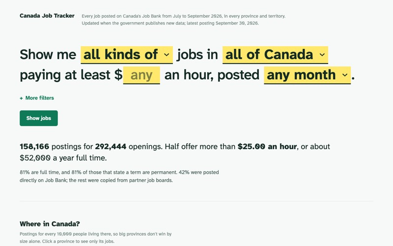
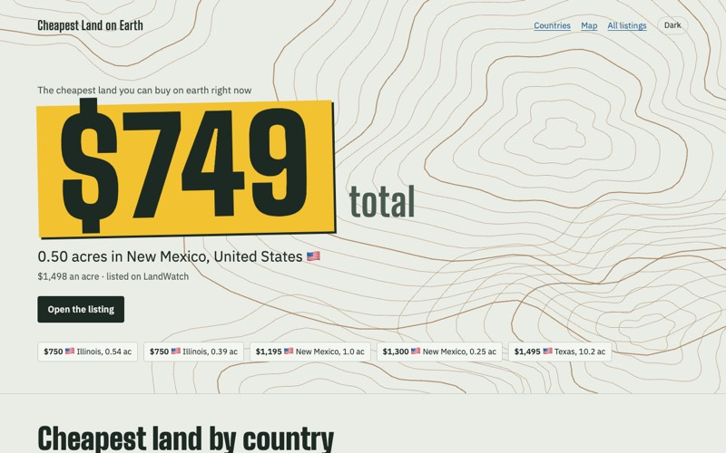
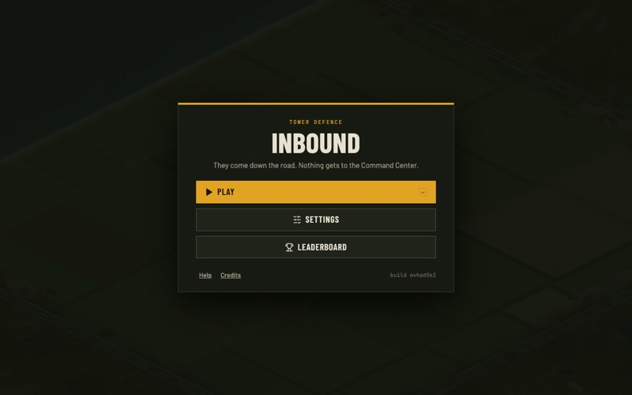
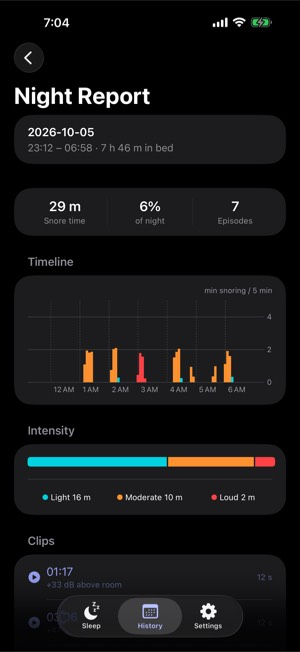
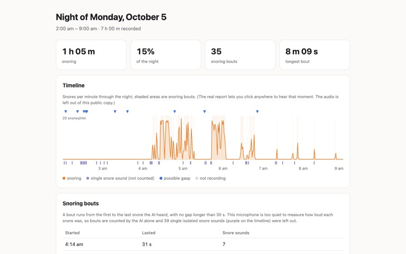
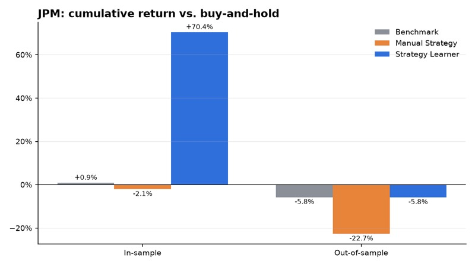

Every job posted on Canada's Job Bank, filterable by province, occupation and wage, with maps and charts. Written in Rust and compiled to WebAssembly, so it runs as a free static site.

Scrapes land listings from a few big portals, converts the prices to US dollars and ranks them by total price, so you can see the cheapest land for sale anywhere. It reruns every day.

A 3D tower defence game in the browser. You build ground and air defences to protect a command center from columns of vehicles, drones and missiles. Three.js on top of a deterministic TypeScript simulation.

A free iPhone app that records you overnight, detects snoring with YAMNet and lets you play back each clip. It's on the App Store.

A Raspberry Pi with a USB mic next to my bed records the whole night. A Mac scores the recording in the morning, and an iPhone app shows when I snored.

A summarizer in Rust that picks the most representative sentences from a document and prints them word for word, so it can't make anything up. It runs locally, and the same input always gives the same output.
A Chrome extension that runs an AI agent in your own browser and is built to be fast. It sends the model text snapshots of the page instead of screenshots and batches its actions. It works with any OpenAI-compatible model.
Leaderboards of who the world is talking about and how people feel about them. It pulls from news, Wikipedia, Reddit, Bluesky and Hacker News and scores sentiment with an LLM. It isn't deployed yet.
Our entry for the TechTO hackathon. You give it a city and dates, and it phones the cheapest hotels at the same time with a voice agent, then emails the cheapest one that confirms a room.
An iPhone app for produce shops. Staff record what was sold, delivered or spoiled on their own phones, and every phone shows the same count.
A backtester that pits a random forest trading strategy against a hand-written one and buy-and-hold on JPM, counting commission and market impact. The forest returned 70% in-sample but only matched buy-and-hold on unseen data.

A small Python CLI that asks Claude Code, Codex or any OpenRouter model the same question several times and scores the majority answer. Use it to compare models on your own questions.
Pauses every Claude Code session on a Mac when memory pressure goes critical, and resumes them when it drops. Nothing gets killed.
A 2021 Flask site that ran VADER sentiment analysis on recent tweets about any topic. The site is no longer online.